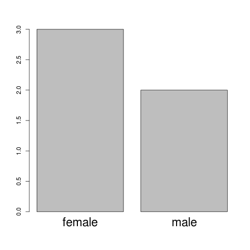

R basic and EDA Review
智庫驅動
Ben Chen
R basic
變數賦值
- 變數的賦值方式： <- (箭號) 以及 = (等號)， 建議使用 <- 。
- 註解以 # (井號) 表示。
- R 物件最基本的單位是向量 (vector)，以 c() 表示 (c 取自combine之意)，元素以逗號分隔，其中向量包含三種基本類別(class)：
- 數值向量 (numeric vector)
- 字串向量 (character vector)
- 布林向量 (logical vector)
變數賦值
# Numeric，class(x)查詢物件的類別
x <- c(1.1, 2.2, 5.23)
class(x)
## [1] "numeric"
# Character
y <- c("apple", "book", "cat")
class(y)
## [1] "character"
# logical
z <- c(TRUE, FALSE, TRUE)
class(z)
## [1] "logical"
向量元素的命名
- 在 R 語言中，可以對向量中的每一個元素命名，或者是利用函數 names 對向量元素命名，這有助於該向量的理解。
y <- c("apple", "book", "cat")
y1 <- c(A = "apple", B = "book", C = "cat")
y1
A B C
"apple" "book" "cat"
y <- c("apple", "book", "cat")
names(y1) <- c("A", "B", "C")
y1
## A B C
## "apple" "book" "cat"
names(y1)
## [1] "A" "B" "C"
練習命名
如何以y對z命名？
y <- c("apple", "book", "cat")
z <- c(TRUE,FALSE,TRUE)
- name(z)<-y
- names(y)<-z
- names(z)<-y
names
names(z)<-y z
factor物件簡介
- 當一向量變數是類別型變數 (categorical data，譬如：性別、教育水準) 時，在R語言中以factor進行定義。
# 產生2個'male'和3個'female'
gender <- c(rep("male", 2), rep("female", 3)) #rep: 複製value
gender
## [1] "male" "male" "female" "female" "female"
gender <- factor(gender) #利用factor將字串變成factor
gender
## [1] male male female female female
## Levels: female male
Level的順序
levels(gender)
## [1] "female" "male"
as.numeric(gender)
## [1] 2 2 1 1 1
# 1=female, 2=male 依字母順序排列

Change vector of labels for the levels
gender <- factor(gender, levels = c("male", "female"), labels = c("M", "F"))
gender # 改變了level的順序，也改變了label名稱
## [1] M M F F F
## Levels: M F
練習factor
請將city以以下的順序為level的順序設為factor物件
city <- c('Taipei','DC','Tokyo','London')
- city<-factor(city, levels=city)
- city<-factor(city)
- city<-factor(city, labels=city)
應該控制levels
city<-factor(city, levels=city) city
讀取表格檔案
# 選擇路徑
path <- file.choose()
# 先讀前5列觀察數據
ubike <- read.table(path, sep = ",", header = TRUE, nrows = 5)
head(ubike)
# 利用read.table讀取檔案，要注意資料分隔方式，csv檔通常以逗號分隔
# sep表示分隔符號，header表示是否將第一列視為欄位名稱
ubike <- read.table(path, sep = ",", header = TRUE,
# 利用colClasses設定每欄資料的class，可以加快讀取速度
colClasses = c("factor", "integer", "integer", "factor", "factor",
"numeric", "numeric", "integer", "numeric", "integer", "integer",
"numeric", "numeric", "integer", "integer", "numeric", "numeric",
"numeric", "numeric", "numeric", "numeric"))
# read.csv可以直接讀取csv檔，自動以逗號分隔，並以第一列為欄位名稱
ubike <- read.csv(path)
取值
x <- c(4.39, 2.11, 3.17)
x[c(1, 3)] # 選擇第1和3個元素
## [1] 4.39 3.17
x[-1] # 移除第1個元素
## [1] 2.11 3.17
x > 3 # 判斷x中的元素是否大於3
## [1] TRUE FALSE TRUE
which(x > 3) # x中哪個元素大於3
## [1] 1 3
x[which(x > 3)] # 選出x中大於3的元素
## [1] 4.39 3.17
x[x > 3] # simplify expression
## [1] 4.39 3.17
data.frame 物件簡介
- 資料表 (data.frame) 是向量 (vector) 的一種推廣，它可以將多個相同長度 (不一定是相同類別) 的向量合併在一起 (combine by column)。
x <- c(4.39, 2.11, 3.17)
y <- c("apple", "book", "cat")
z <- c(TRUE, FALSE, TRUE)
df <- data.frame(v1 = x, v2 = y, v3 = z)
df
## v1 v2 v3
## 1 4.39 apple TRUE
## 2 2.11 book FALSE
## 3 3.17 cat TRUE
data.frame 物件簡介
str(df) # 展示物件各欄位的屬性結構
## 'data.frame': 3 obs. of 3 variables:
## $ v1: num 4.39 2.11 3.17
## $ v2: Factor w/ 3 levels "apple","book",..: 1 2 3
## $ v3: logi TRUE FALSE TRUE
colnames(df) # 展示物件的欄位名稱
## [1] "v1" "v2" "v3"
rownames(df) # 展示物件的列名稱
## [1] "1" "2" "3"
data.frame的取值
- 利用[,] 提取物件內容，基本表達式為x[i, j]，表示x物件中第i列 (ith row)、第j行 (jth column) 的值，也可用x[i, ]表達第i列的向量；x[,j]表達第j行的向量。
df[1] # 選擇第一欄
## v1
## 1 4.39
## 2 2.11
## 3 3.17
df[, 1] # 選擇第一欄的數值
## [1] 4.39 2.11 3.17
df["v1"] # 選擇第一欄
## v1
## 1 4.39
## 2 2.11
## 3 3.17
df$v1 # 選擇第一欄的數值
df[["v1"]]
## [1] 4.39 2.11 3.17
練習取值
請取出df第三列，第二行的數值
x <- c(4.39, 2.11, 3.17)
y <- c("apple", "book", "cat")
z <- c(TRUE, FALSE, TRUE)
df <- data.frame(v1 = x, v2 = y, v3 = z,stringsAsFactors=FALSE)
- df[3,2]
- df$v2[3]
- df[["v3"]][2]
df[3,2] df$v2[3] df[["v2"]][3]
data.frame的取值
- 可以用["欄位名稱"]，選擇特定欄位，也可以用 $ 來提取物件的特定欄位，請試著在 df$ 之後按tab (自動完成鍵)。中括號中可以使用條件算子進行取值。
df[2, ] # select 2nd row
## v1 v2 v3
## 2 2.11 book FALSE
df[df$v1 > 3 & z == TRUE, "v2"]
## [1] apple cat
## Levels: apple book cat
data.frame的合併
- 利用rbind (上下合併)、cbind (左右合併) 對data.frame進行合併
x <- data.frame(Drama = c("我的自由年代", "回到愛以前"), TV = c("三立",
"台視"))
y <- data.frame(Vol = c(12, 13), Rating = c(2.67, 2.58))
z <- data.frame(Drama = c("16個夏天", "妹妹"), TV = c("公視", "台視"),
Vol = c(16, 7), Rating = c(2.3, 1.3))
data.frame的合併
x
## Drama TV
## 1 我的自由年代 三立
## 2 回到愛以前 台視
y
## Vol Rating
## 1 12 2.67
## 2 13 2.58
xy <- cbind(x, y)
xy
## Drama TV Vol Rating
## 1 我的自由年代 三立 12 2.67
## 2 回到愛以前 台視 13 2.58
data.frame的合併
z
## Drama TV Vol Rating
## 1 16個夏天 公視 16 2.3
## 2 妹妹 台視 7 1.3
rbind(xy, z)
## Drama TV Vol Rating
## 1 我的自由年代 三立 12 2.67
## 2 回到愛以前 台視 13 2.58
## 3 16個夏天 公視 16 2.30
## 4 妹妹 台視 7 1.30
# 壓縮程式碼 rbind(cbind(x, y),z)
Arithmetic Operator
x + y # x=50;y=3
## [1] 53
x - y
## [1] 47
x * y
## [1] 150
x^y # x的y次方
## [1] 125000
x/y # x除以y
## [1] 16.67
x%%y # x除以y的餘數
## [1] 2
x%/%y # x除以y的商數
## [1] 16
Logical Operator
| Operator | Description |
|---|---|
| < | 小於 |
| <= | 不大於 |
| > | 大於 |
| >= | 不小於 |
| == | 兩者相等 |
| != | 不等於 |
| !x | 非x |
多重條件
- 且：
&布林運算結果1 & 布林運算結果1
- 或：
|布林運算結果1 | 布林運算結果1
formula
- formula相當於對模型的描述，基本的表示方法為y~x，x和y分別為不同的向量變數，以~隔開，而y~x可想成觀察變數y相對於變數x的變化。例如：觀察濕度相對於降雨量的變化。
plot(humidity ~ rainfall, ubike)
練習Formula
- 觀察氣壓相對於溫度的變化。

練習Formula-Answer
plot(pressure ~ temp, ubike)
formula
有時待觀察的變數可能被不只一個變數影響，而這些變數之間也有可能會相互影響，模型的描述就會比較複雜。
y~x+w+z # 觀察y相對於x, w, z的變化
y~x*z # 觀察y相對於x, z, xz的變化
y~x:z # 觀察y相對於xz的變化
y~(x+z)^2 # 觀察y相對於x, z, xz的變化
y~x:z-x # 觀察y相對於z, xz的變化
練習Formula
在ubike中，想建立humidity與temp、pressure和rainfall之間的模型，formula該如何表示？
- humidity~temp:pressure+rainfall
- humidity~temp+pressure+rainfall
- humidity~temp+pressure *rainfall
請愛用+
- temp:pressure、rainfall
- temp、pressure和rainfall
- temp、pressure、rainfall和pressure:rainfall
Exploratory Data Analysis
EDA的複習
- 了解如何看數據
- 類別型數據
- 數值型數據
- 單一數據
- 兩欄數據
列表觀察類別型數據
| 房價 | 信義區 | 大安區 | |
|---|---|---|---|
| 1 | 25% | 12.50 | 14.80 |
| 2 | 50% | 18.00 | 23.40 |
| 3 | 75% | 25.60 | 37.40 |
| 4 | 平均 | 25.20 | 31.50 |
Barplot觀察類別與數值
Boxplot觀察不同類別數據分布
Density plot觀察單一數據的分布情形
Scattor plot觀察兩種數據的分布
觀察時間與數據之間的關係
總結
- 學Linear Model前的準備
- R Basic
- 賦值與取值
- 讀檔
- factor
- formula
- Exploratory Data Analysis
- 敘述統計量與視覺化
- R Basic